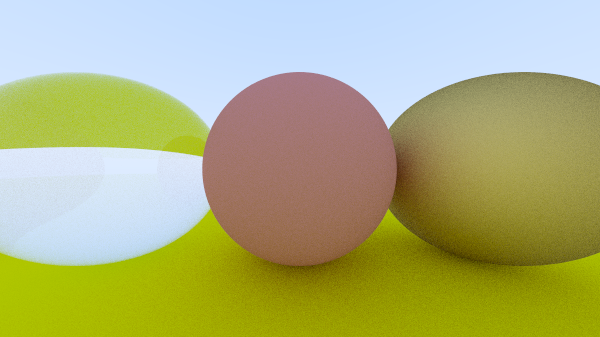

Ray Tracing
Notes on Ray Tracing in One Weekend
Table of Contents
- 1. Output An Image
- 2. Vec3 Class
- 3. Rays
- 4. Adding a sphere to the scene
- 5. Antialiasing
- 6. Diffuse Materials
- 7. Metal
- 8. Dielectrics
- 9. Positionable Camera
- 10. Depth of Field (Defocus Blur)
- 11. The Finale
- 12. Multithreading
1. Output An Image
1.1. PPM Image Format
Usually it details some sort of encoding - P3 being colors in ASCII.
Then new line followed by Num Cols space, Num Rows.
The next line is a single number detailing the scale (255 usually denotes max color).
Then R G B space separated values times the number of columns per row.
Then you have Num Rows rows to get you the final image.
1.1.1. Example
Source:
#include <iostream> using namespace std; int main() { const int image_width = 256; const int image_height = 256; cout << "P3" << endl << image_width << " " << image_height << endl << "255" << endl; for (int j = image_height - 1; j >= 0; --j) { for (int i = 0; i < image_width; ++i) { auto r = double(i) / (image_width - 1); auto g = double(j) / (image_height - 1); auto b = 0.25; int ir = static_cast<int>(255.999 * r); int ig = static_cast<int>(255.999 * g); int ib = static_cast<int>(255.999 * b); // for each pixel cout << ir << " " << ig << " " << ib << endl; } } }
Output:

2. Vec3 Class
A 3D vector class that's used for:
- Colors
- Locations
- Directions
- Offsets
- etc.
There will be two aliases created for vec3: point3 and color. This is just used to clarify intent and use.
2.1. Vec3.h
Code for Vec3: vec3.h
Note: This is just for showing. The code is stored as a file here.
#ifndef VEC3_H #define VEC3_H #include <iostream> class vec3 { public: vec3() : e{0, 0, 0} {} vec3(double e0, double e1, double e2) : e{e0, e1, e2} {} // getter methods double x() const {return e[0]} double y() const {return e[1]} double z() const {return e[2]} vec3 operator-() const { return vec3(-e[0], -e[1], -e[2]); } double operator[](int i) const {return e[i]; } double& operator[](int i) {return e[i]; } // adding vec3 operator+=(const vec3 &v) { for (int i = 0; i < 3; ++i) { e[i] += v.e[i]; } return *this; } // scalar multiplication vec3& operator*=(const double t) { for (int i = 0; i < 3; ++i) { e[i] *= t; } return *this; } // scalar division vec3& operator/=(const double t) { return *this *= 1/t; } double length() const { // return std::sqrt(length_squared()); return 1.0; } double length_squared() const { return e[0]*e[0] + e[1]*e[1] + e[2]*e[2]; } public: double e[3]; }; // Type aliases for vec3 using point3 = vec3; // used for 3D points using color = vec3; // used for RGB color // vec3 Utility Functions inline std::ostream& operator<<(std::ostream &out, const vec3 &v) { return out << v.e[0] << ' ' << v.e[1] << ' ' << v.e[2]; } inline vec3 operator+(const vec3 &u, const vec3 &v) { return vec3(u.e[0] + v.e[0], u.e[1] + v.e[1], u.e[2] + v.e[2]); } inline vec3 operator-(const vec3 &u, const vec3 &v) { return vec3(u.e[0] - v.e[0], u.e[1] - v.e[1], u.e[2] - v.e[2]); } inline vec3 operator*(const vec3 &u, const vec3 &v) { return vec3(u.e[0] * v.e[0], u.e[1] * v.e[1], u.e[2] * v.e[2]); } inline vec3 operator*(double t, const vec3 &v) { return vec3(t*v.e[0], t*v.e[1], t*v.e[2]); } inline vec3 operator*(const vec3 &v, double t) { return t * v; } inline vec3 operator/(vec3 v, double t) { return (1/t) * v; } inline double dot(const vec3 &u, const vec3 &v) { return u.e[0] * v.e[0] + u.e[1] * v.e[1] + u.e[2] * v.e[2]; } inline vec3 cross(const vec3 &u, const vec3 &v) { return vec3(u.e[1] * v.e[2] - u.e[2] * v.e[1], u.e[2] * v.e[0] - u.e[0] * v.e[2], u.e[0] * v.e[1] - u.e[1] * v.e[0]); } inline vec3 unit_vector(vec3 v) { return v / v.length(); } #endif
2.2. color.h
Code for Color Utility: color.h
Saved as a header here.
#ifndef COLOR_H #define COLOR_H #include "vec3.h" #include <iostream> void write_color(std::ostream &out, color pixel_color) { // Write the translated [0,255] value of each color component. out << static_cast<int>(255.999 * pixel_color.x()) << ' ' << static_cast<int>(255.999 * pixel_color.y()) << ' ' << static_cast<int>(255.999 * pixel_color.z()) << '\n'; } #endif
2.3. Revisiting Example 1.1.1
Update the old example but this time using the color class and using write_color. I also added
more blue hue to all the pixels.
Source:
#include "util/color.h" #include "util/vec3.h" #include <iostream> using namespace std; int main() { const int image_width = 256; const int image_height = 256; cout << "P3" << endl << image_width << " " << image_height << endl << "255" << endl; for (int j = image_height - 1; j >= 0; --j) { for (int i = 0; i < image_width; ++i) { color pixel(double(i) / (image_width - 1), double(j) / (image_height - 1), 0.85); write_color(std::cout, pixel); } } }
Output:

3. Rays
3.1. Ray Class
A ray is a function, \(P(t) = A + tb\), \(t \in \mathbb{R}\). A is the ray origin, and b is the ray vector.
#ifndef RAY_H #define RAY_H #include "vec3.h" class ray { public: ray() {} ray(const point3& origin, const vec3& direction) : orig(origin), dir(direction) {} point3 origin() const { return orig; } vec3 direction() const { return dir; } point3 at(double t) const { return orig + t*dir; } public: point3 orig; vec3 dir; }; #endif
3.2. Sending Rays into Scene
Its time to ray trace! The ray tracer sends rays through pixels and computes the color seen in the direction of those rays.
Here are the steps:
- Calculate the ray from the eye to the pixel.
- Determine which objects the ray intersects.
- Computer a color for that intersection point.
Some parameters we need:
- Aspect ratio
- Focal length This is the distance from the eye to the projection plane.?? IDK what this is, but its a plane in the back
- Eye/Camera This will be at the origin.
The y axis will be up, x axis to the right, and z axis moving backwards, because hand rules.
3.3. Example: Rendering a blue-to-white gradient, using Ray Tracing
Source
#include "util/color.h" #include "util/ray.h" #include "util/vec3.h" #include <iostream> // this function returns a color for which ray its on. color ray_color(const ray& r) { vec3 unit_direction = unit_vector(r.direction()); // this is to try and put the pixel in the center y auto t = 0.5 * (unit_direction.y() + 1.0); // the gradient color (blue-white) depends on where the // y-value sits. // higher y values -> more blue return t * color(0.5, 0.7, 1.0) + (1 - t) * color(1.0, 1.0, 1.0); } int main() { // image double aspect = 16.0 / 9.0; int height = 200; int width = static_cast<int>(height * aspect); // camera setup double viewport_height = 2.0; double viewport_width = viewport_height * aspect; double focal_length = 1.0; point3 origin(0.0, 0.0, 0.0); vec3 horizontal(viewport_width, 0.0, 0.0); vec3 vertical(0.0, viewport_height, 0.0); vec3 lower_left_corner = origin - horizontal / 2 - vertical / 2 - vec3(0.0, 0.0, focal_length); // Render std::cout << "P3\n" << width << " " << height << "\n255" << std::endl; // loop for (int j = height-1; j >= 0; --j) { // explanation: scans pixels L->R U->D for (int i = 0; i < width; ++i) { // i thus needs to be in the inner loop ray r(origin, vec3(double(i) * viewport_width / width, double(j) * viewport_height / height, 0.0) + lower_left_corner - origin); // color pixel = ray_color(r); // double u = double(i) / (width-1); // fraction of width // double v = double(j) / (height-1); // fraction of height // // why write origin here? well its because the origin may not always be [0, 0, 0] // ray r(origin, lower_left_corner + u * horizontal + v * vertical - origin); color pixel = ray_color(r); write_color(std::cout, pixel); } } }
Output
The resultant image is a gradient from blue to white. Notice that not only is there a
vertical gradient, but also a horizontal one.
To explain this, we look at the ray_color function:
color ray_color(const ray& r) { vec3 unit_direction = unit_vector(r.direction()); // transformation to make to from 0 to 1 auto t = 0.5 * (unit_direction.y() + 1.0); // the gradient color (blue-white) depends on where the // y-value sits. // higher y values -> more blue return t * color(0.5, 0.7, 1.0) + (1 - t) * color(1.0, 1.0, 1.0); }
Unit vector makes the direction component of the ray unit length. This means that when we take the y component of all of those rays, the rays closer to the fringes when normalized dont extend as far into the y direction (because of some of the length contributed to the other components of the vector). We can also guarantee that no y component of any normalised vector will be greater than \(\pm 1\). We perform a transformation on the y scale to get a t that is \(0 \leq t \leq 1\). When \(t = 1\), we get blue, and when \(t = 0\) we get white. As a result the following is produced.

4. Adding a sphere to the scene
Time to add an object to the ray tracer!
4.1. Hit detection
Recall the equation for a sphere with center \((C_x, C_y, C_z)\): \[ (x-C_x)^2 + (y-C_y)^2 + (z-C_z)^2 = r^2 \]
So to determine if a point \((a, b, c)\) is in a sphere, you would check if \[ (x-C_x)^2 + (y-C_y)^2 + (z-C_z)^2 < r^2 \]
4.1.1. Expressing as vectors
Now, \((x-C_x)^2 + (y-C_y)^2 + (z-C_z)^2\) is great and all but
we need it to be in the form of vectors for the vec3 class.
Claim: \((\textbf{P - C})\cdot(\textbf{P - C}) = (x-C_x)^2 + (y-C_y)^2 + (z-C_z)^2\),
where \(P\) is a point \((x, y, z)\), and \(C = (C_x, C_y, C_z)\)
is the center of the sphere.
Thus, \[(\textbf{P-C})\cdot(\textbf{P-C}) = r^2 \]
4.1.2. Detecting if rays hit sphere
The above equation only answers whether a point \(\textbf{P}\) is on the sphere. We want to know if a ray ever hits the sphere. To do this, we substitute \(\textbf{P}\) for \(\textbf{P}(t)=\textbf{A} + t\textbf{B}\), and find value \(t\) such that this equation holds:
\begin{align*} (\textbf{P}(t) - \textbf{C})\cdot(\textbf{P}(t) - \textbf{C}) &= r^2 \\ (\textbf{A}+t\textbf{b} - \textbf{C})\cdot (\textbf{A}+t\textbf{b} - \textbf{C}) &= r^2 \\ (t\textbf{b} + (\textbf{A} - \textbf{C})) \cdot (t\textbf{b} + (\textbf{A} - \textbf{C})) &= r^2 \\ t^2\textbf{b}*\textbf{b} + 2t\textbf{b}\cdot(\textbf{A-C}) + (\textbf{A-C})\cdot(\textbf{A-C}) - r^2 &= 0 \\ \end{align*}1 intersection means the ray touches the sphere once, 2 intersections means the ray passes through the sphere. These intersections can be found in this quadratic equation, but we are only concerned with whether the ray hits the sphere.
We have a handy quadratic equation to find roots: \[x = \frac{-b \pm \sqrt{b^2 - 4ac}}{2a} \]
If \(b^2 - 4ac\) is negative, then there are no roots. So, for the ray \(\textbf{P}(t) = \textbf{A} + t\textbf{b}\) to not intersect the shape,
\begin{align*} (2b\cdot(\textbf{A-C}))^2 - 4(\textbf{b} \cdot b)((\textbf{A-C}) \cdot (\textbf{A-C}) - r^2) < 0 \\ \end{align*}must hold true.
4.1.3. Example: Adding the shape to our gradient
We create a function called hit_sphere which given a sphere, returns whether
the ray hits the sphere.
For now, we color the rays that hit the sphere red in our final result.
Source
#include "util/color.h" #include "util/ray.h" #include "util/vec3.h" #include <iostream> // check if the ray intersects the sphere bool hit_sphere(const point3& center, double radius, const ray& ray) { vec3 org_min_c = ray.origin() - center; double a = dot(ray.direction(), ray.direction()); double b = dot(2*ray.direction(), org_min_c); double c = dot(org_min_c, org_min_c) - radius*radius; return b*b - 4*a*c >= 0; // i left it as geq 0 for now. } // this function returns a color for which ray its on. color ray_color(const ray& r) { if (hit_sphere(point3(0,0,-1), 0.5, r)) return color(1, 0, 0); // if hit sphere, then color it red. vec3 unit_direction = unit_vector(r.direction()); // this is to try and put the pixel in the center y auto t = 0.5 * (unit_direction.y() + 1.0); // the gradient color (blue-white) depends on where the // y-value sits. // higher y values -> more blue return t * color(0.5, 0.7, 1.0) + (1 - t) * color(1.0, 1.0, 1.0); } int main() { // image double aspect = 16.0 / 9.0; int height = 200; int width = static_cast<int>(height * aspect); // camera setup double viewport_height = 2.0; double viewport_width = viewport_height * aspect; double focal_length = 1.0; point3 origin(0.0, 0.0, 0.0); vec3 horizontal(viewport_width, 0.0, 0.0); vec3 vertical(0.0, viewport_height, 0.0); vec3 lower_left_corner = origin - horizontal / 2 - vertical / 2 - vec3(0.0, 0.0, focal_length); // Render std::cout << "P3\n" << width << " " << height << "\n255" << std::endl; // loop for (int j = height-1; j >= 0; --j) { // explanation: scans pixels L->R U->D for (int i = 0; i < width; ++i) { // i thus needs to be in the inner loop ray r(origin, vec3(double(i) * viewport_width / width, double(j) * viewport_height / height, 0.0) + lower_left_corner - origin); color pixel = ray_color(r); write_color(std::cout, pixel); } } }
Output:
4.2. Surface Normals
A surface normal is the vector that is perpendicular to the surface of the point of intersection. For a point \(\textbf{P}\) on the sphere with center \(\textbf{C}\), the normal vector would be \(\textbf{P} - \textbf{C}\). Convince yourself that this is true. We also normalize this vector so that each component is between -1 and 1.
4.2.1. Example: Visualizing The Normal
For now, we use a color map to visualize the normal. Since each vector is normalized, each component is between -1 and 1, which we can map to an interval from 0 to 1. Then, we map \(x \mapsto r\), \(y \mapsto g\), and \(z \mapsto b\).
Let us visualize this: Source
#include "util/color.h" #include "util/ray.h" #include "util/vec3.h" #include <iostream> // check if the ray intersects the sphere, if so, return the t value of the ray // that touches the sphere. double hit_sphere(const point3& center, double radius, const ray& ray) { vec3 org_min_c = ray.origin() - center; double a = dot(ray.direction(), ray.direction()); double b = dot(2*ray.direction(), org_min_c); double c = dot(org_min_c, org_min_c) - radius*radius; double discriminant = b*b - 4*a*c; if (discriminant < 0) { // why return -1? When is it -1? // means the object is behind the ray... return -1.0; } else { return (-b - sqrt(discriminant)) / (2.0 * a); } } // this function returns a color for which ray its on. color ray_color(const ray& r) { point3 sphere_center(0,0,-1); double t = hit_sphere(sphere_center, 0.5, r); if (t > 0.0) { // calculate the norm (P - C) vec3 norm = unit_vector(r.origin() + t * r.direction() - sphere_center); return 0.5 * (norm + vec3(1, 1, 1)); } vec3 unit_direction = unit_vector(r.direction()); // this is to try and put the pixel in the center y t = 0.5 * (unit_direction.y() + 1.0); // the gradient color (blue-white) depends on where the // y-value sits. // higher y values -> more blue return t * color(0.5, 0.7, 1.0) + (1 - t) * color(1.0, 1.0, 1.0); } int main() { // image double aspect = 16.0 / 9.0; int height = 200; int width = static_cast<int>(height * aspect); // camera setup double viewport_height = 2.0; double viewport_width = viewport_height * aspect; double focal_length = 1.0; point3 origin(0.0, 0.0, 0.0); vec3 horizontal(viewport_width, 0.0, 0.0); vec3 vertical(0.0, viewport_height, 0.0); vec3 lower_left_corner = origin - horizontal / 2 - vertical / 2 - vec3(0.0, 0.0, focal_length); // Render std::cout << "P3\n" << width << " " << height << "\n255" << std::endl; // loop for (int j = height-1; j >= 0; --j) { // explanation: scans pixels L->R U->D for (int i = 0; i < width; ++i) { // i thus needs to be in the inner loop ray r(origin, vec3(double(i) * viewport_width / width, double(j) * viewport_height / height, 0.0) + lower_left_corner - origin); color pixel = ray_color(r); write_color(std::cout, pixel); } } }
Output:

4.3. Simplifying the intersection code.
There is an extra 2 in the front of b in our equation. Suppose we then used \(b = 2h\) in our quadratic equation:
\begin{align*} \frac{-b \pm \sqrt{b^2 - 4ac}}{2a} \\ = \frac{-(2h) \pm \sqrt{(2h)^2 - 4ac}}{2a} \\ = \frac{-2h \pm \sqrt{4h^2 - 4ac}}{2a} \\ = \frac{-2h \pm 2\sqrt{h^2 - ac}}{2a} \\ = \frac{-h \pm \sqrt{h^2 - ac}}{a} \\ \end{align*}Now we use these changes in our code:
// check if the ray intersects the sphere, if so, return the t value of the ray // that touches the sphere. double hit_sphere(const point3& center, double radius, const ray& ray) { vec3 org_min_c = ray.origin() - center; double a = dot(ray.direction(), ray.direction()); double h_b = dot(ray.direction(), org_min_c); double c = dot(org_min_c, org_min_c) - radius*radius; double discriminant = h_b*h_b - a*c; if (discriminant < 0) { // why return -1? When is it -1? // means the object is behind the ray... return -1.0; } else { return (-h_b - sqrt(discriminant)) / a; } }
4.4. Abstraction to hittable objects
So what about several spheres? Or shapes? Let's generalize this problem into an abstract class. This generalized "surface" is anything that can be hit by rays.
struct hit_record { point3 point; // point of intersection vec3 norm; // resultant norm of the intersection double t; // t-value of ray to get to point. } class hittable { public: virtual bool hit(const ray& r, double t_min, double t_max, hit_record& rec) const = 0; }
So we use this general class to implmement a sphere.
class sphere : public hittable { public: sphere() {} sphere(point3 center, double r) : center(center), radius(r) {}; virtual bool hit(const ray& r, double t_min, double t_max, hit_record& rec) const override; public: point3 center; double radius; } bool sphere::hit(const ray&r, double t_min, double t_max, hit_record& rec) const { vec3 org_min_c = r.origin() - center; double a = dot(r.direction(), r.direction()); double h_b = dot(ray.direction(), org_min_c); double c = dot(org_min_c, org_min_c) - radius*radius; double discriminant = h_b*h_b - a*c; if (discriminant < 0) { return false; } else { double sqrtd = std::sqrt(discriminant); double root = (-h - sqrtd) / a; if (t_min > root || t_max < root) { root = (-h + sqrtd) / a; if (t_min > root || t_max < root) { return false; } } rec.t = root; rec.point = r.at(rec.t); rec.norm = unit_vector(rec.point - center); // this will always be radius return true; } }
4.4.1. Front Faces vs Back Faces
In the code above, the normal always points outwards from the center of the sphere, even if the ray intersects the sphere from the inside.
From the book, it says that we need to know which side the ray is on when we color the sphere. If we choose to always have the normal on the outside, then we will need to do a dot product to check the side.
If we always decide to return the normal against the direction of the ray, then we will also need to provide information on whether the ray is inside or outside.
In terms of which method to choose, the second one determines the side at geometry intersection, whereas the first one determines at time of coloring. As the book says, it is a matter of preference but because this book has more material types than geometry types they have decided to put the determination at geometry intersection time, to save work.
Let us update the appropriate sections of code:
First, we need to add an extra member to the hit_record struct, to store side information.
struct hit_record { point3 point; vec3 norm; double t; bool front_face; // confusing as to why its called front inline void set_face_normal(const ray& r, const vec3& out_norm) { front_face = dot_product(r.direction(), out_norm) < 0; norm = front_face ? out_norm : -out_norm; } }
How does this affect our sphere implementation?
bool sphere::hit(const ray&r, double t_min, double t_max, hit_record& rec) const { ve org_min_c = r.origin() - center; double a = dot(r.direction(), r.direction()); double h_b = dot(ray.direction(), org_min_c); double c = dot(org_min_c, org_min_c) - radius*radius; double discriminant = h_b*h_b - a*c; if (discriminant < 0) { return false; } else { double sqrtd = std::sqrt(discriminant); double root = (-h - sqrtd) / a; if (t_min > root || t_max < root) { root = (-h + sqrtd) / a; if (t_min > root || t_max < root) { return false; } } rec.t = root; rec.point = r.at(rec.t); // rec.norm = unit_vector(rec.point - center); // this will always be radius rec.set_face_normal(r, unit_vector(rec.point - center)); return true; } }
The sphere implmentation can be found here.
4.4.2. A List of Hittable Objects
With a generic object like hittable, we can make a class to store all the hittables! Now, we can do hit detection on a collection of objects.
The file can be found here.
class hittable_list { public: hittable_list() {} hittable_list(shared_ptr<hittable> object) {add(object);} void clear() { objects.clear(); } void add(shared_ptr<hittable> object) { objects.push_back(object); } virtual bool hit(const ray& r, double t_min, double t_max, hit_record& rec) const override; public: vector<shared_ptr<hittable>> objects; }; bool hittable_list::hit(const ray& r, double t_min, double t_max, hit_record& rec) const { // probably want to distinguish between objects in front or behind hit_record rec_temp; bool is_hit = false; double closest_hit = t_max; for(const auto &obj : objects) { if (obj->hit(r, t_min, closest_hit, rec_temp)) { is_hit = true; closest_hit = rec.t; rec = rec_temp; } } return is_hit; };
4.4.3. Wrapping Up With a Revised Example
Returning to the previous example, we re-write the program, now with another sphere in the world, with radius 100 and centered around \((0, -100.5, -1)\).
The header file rtweekend has some useful constants like
infinity and pi, and a function for converting
degrees to radians.
Note to Self: Remember to add semicolons to the end of your class/struct declarations, as the errors that arise (Expected unqualified id) are not very helpful.
Source:
#include "util/rtweekend.h" #include "util/color.h" #include "util/hittable.h" #include "util/hittable_list.h" #include "util/sphere.h" #include <iostream> // give it a ray and an object and it'll tell you what to color it color ray_color(const ray& r, const hittable& world) { hit_record rec; if (world.hit(r, 0, infinity, rec)) { // if hit, return a color map return 0.5 * (rec.norm + vec3(1, 1, 1)); } // otherwise, return sky gradient double blue_portion = 0.5 * (unit_vector(r.direction()).y() + 1.0); return blue_portion * color(0.5, 0.7, 1.0) + (1 - blue_portion) * color(1, 1, 1); } int main() { // set up width and height double aspect = 16.0/9.0; int img_width = 600; int img_height = static_cast<int>(img_width / aspect); // set up camera double vp_height = 2.0; // we choose height here because height is known double vp_width = vp_height * aspect; double focal_length = 1.0; // useful parameters point3 origin(0, 0, 0); vec3 horizontal(vp_width, 0, 0); vec3 vertical(0, vp_height, 0); vec3 lower_left = origin - horizontal / 2 - vertical / 2 - vec3(0, 0, focal_length); // set up the world hittable_list world; world.add(make_shared<sphere>(point3(0, 0, -1), 0.5)); world.add(make_shared<sphere>(point3(0, -100.5, -1), 100)); // render time std::cout << "P3\n" << img_width << " " << img_height << "\n255\n"; for (int j = img_height-1; j >= 0; --j) { for (int i = 0; i < img_width; ++i) { ray r(origin, lower_left + vertical * (double(j) / img_height) + horizontal * (double(i) / img_width) - origin); write_color(std::cout, ray_color(r, world)); } } }
Output: In the camera view, we see the original sphere as well as the gradient in the back where no rays intersected any object. The green curvature is the top of the massive sphere with radius 100, and it is green due to how our colormap was designed: (normal with big positive y component \(\implies\) larger green value.)

5. Antialiasing
Notice the jagged lines of the smooth surface of the sphere. This is aliasing. To get rid of this effect, we can average a bunch of pixels around the area to make it look smoother. The book says that we will not bother with stratification, but this may be something that I might look into later. The argument offered as to why we will not implement stratification is because our ray-tracer will not benefit much from this and makes the code much more complex.
To begin, we start with some more abstractions.
5.1. Random Number Generation
We need some helper functions to generate random doubles. First, we create one that can generate a double in the range \([0, 1)\), with the help of cstdlib.
#include <cstdlib> inline double random_double() { // Returns a random real in [0,1). return rand() / (RAND_MAX + 1.0); }
Then, let's extend this to create a function that gives a random double in a range:
inline double random_double(double min, double max) { return min + (max - min) * random_double(); }
These will be added to our rtweekend.h header file.
5.2. Abstracting the Camera
Given a pixel we have several samples and send rays through each of the samples. The colors are then averaged. Let's create a camera class to manage the virtual camera and screen sampling. The camera has:
- Aspect Ratio
- viewport width/height
- focal length
and some useful constants, like
vec3horizontal [viewportwidth, 0, 0]vec3vertical [0, viewportheight, 0]vec3botleft \(\leftarrow\) origin - horizontal / 2 - vertical / 2 - [0, 0, -focallength]
Some functions that the camera has might be the get_ray function that returns a ray for a cartesian
coordinate given.
The header file can be found here.
class camera { public: camera() { double aspect = 16.0 / 9.0; double vp_height = 2.0; double vp_width = vp_height * aspect; double focal_length = 1.0; origin = vec3(0, 0, 0); horizontal = vec3(vp_width, 0, 0); vertical = vec3(0, vp_height, 0); lower_left = origin - horizontal / 2 - vertical / 2 - vec3(0, 0, focal_length); } ray get_ray(double u, double v) const { return ray(origin, lower_left + horizontal * u + vertical * v - origin); } public: vec3 origin; vec3 horizontal; vec3 vertical; vec3 lower_left; };
Now to handle multi-sampled coloring, we must modify the coloring function in color.h:
void write_color(std::ostream &out, color pixel_color) { // Write the translated [0,255] value of each color component. out << static_cast<int>(255.999 * pixel_color.x()) << ' ' << static_cast<int>(255.999 * pixel_color.y()) << ' ' << static_cast<int>(255.999 * pixel_color.z()) << '\n'; } void write_color_aa(std::ostream &out, color pixel_color, int samples_per_pixel) { // get pixel color. double r = pixel_color.x(); double g = pixel_color.y(); double b = pixel_color.z(); // divide by samples per px r /= samples_per_pixel; g /= samples_per_pixel; b /= samples_per_pixel; // Write the translated [0,255] value of each color component. out << static_cast<int>(256 * clamp(r, 0, 0.999)) << ' ' << static_cast<int>(256 * clamp(g, 0, 0.999)) << ' ' << static_cast<int>(256 * clamp(b, 0, 0.999)) << '\n'; }
Why use clamp instead of multiplying it by 255.999? I guess it ensures for sure that the r, g, and b component will be between 0 and 255 (truncated, inclusive). Now it's time to adapt this change to our main function.
Source:
#include "util/rtweekend.h" #include "util/color.h" #include "util/hittable.h" #include "util/hittable_list.h" #include "util/sphere.h" #include "util/camera.h" #include <iostream> // give it a ray and an object and it'll tell you what to color it color ray_color(const ray& r, const hittable& world) { hit_record rec; if (world.hit(r, 0, infinity, rec)) { // if hit, return a color map return 0.5 * (rec.norm + vec3(1, 1, 1)); } // otherwise, return sky gradient double blue_portion = 0.5 * (unit_vector(r.direction()).y() + 1.0); return blue_portion * color(0.5, 0.7, 1.0) + (1 - blue_portion) * color(1, 1, 1); } int main() { // Image double aspect = 16.0 / 9.0; double img_width = 600; double img_height = static_cast<int>(img_width / aspect); int samples_per_px = 100; // world hittable_list world; world.add(make_shared<sphere>(point3(0, 0, -1), 0.5)); world.add(make_shared<sphere>(point3(0, -100.5, -1), 100)); // camera camera cam; // render std::cout << "P3\n" << img_width << " " << img_height << "\n255\n"; for (int j=img_height - 1; j >= 0; --j) { for (int i = 0; i < img_width; ++i) { // do stuff color temp(0, 0, 0); for (int s = 0; s < samples_per_px; ++s) { // only sample [0, 1) + pixel. If that pixel is half hit half not, then it is blurred. double u = (i + random_double()) / (img_width - 1); double v = (j + random_double()) / (img_height - 1); temp += ray_color(cam.get_ray(u, v), world); } write_color_aa(std::cout, temp, samples_per_px); } } }
OUTPUT:
The result is a much smoother sphere, with no jagged lines.
| Before | After |
|
 100 samples 100 samples |
 1000 samples 1000 samples |
The visual improvements from 100 to 1000 samples is minor, but takes a lot longer to render.
6. Diffuse Materials
Now that we have objects and multiple rays per pixel, we can make some materials. To start, let's do diffuse (matte) materials.
6.1. Simple diffuse material
The material takes the rays, and scatters them into random directions. These materials do not emit light but they can modulate that with their own color (whatever that means)
Diffuse material might also absorb the ray (that's why darker surfaces look dark).
We will first use a hacky algorithm that randomizes direction, a "hacky lambertian" algorithm for ideal diffuse surfaces.
The Algorithm
There are two unit radius spheres tangent to the hit point p of a surface.
These two spheres have a center of \(\mathbf{P} - \mathbf{n}\) or \(\mathbf{P} + \mathbf{n}\).
The sphere with a center of \(\mathbf{P} - \mathbf{n}\) is considered inside of the surface, and
\(\mathbf{P} + \mathbf{n}\) is considered outside of the surface. We select the tangent that is on the
same side as the ray origin. Pick a random point \(\mathbf{S}\) inside this unit sphere and send a
ray from the hit point \(\mathbf{P}\) to the random point \(\mathbf{S}\).
Note: How do we get a random point in a unit sphere? For now, we will find a random point in a unit cube and re-draw the point if it is not in the unit sphere.
// put these inside our vec3 class inline static vec3 random(){ return vec3(random_double(), random_double(), random_double()); } inline static vec3 random(double min, double max) { return vec3(random_double(min, max), random_double(min, max), random_double(min, max)) } // put these in the vec3 header vec3 random_in_unit_sphere() { while (true) { auto p = vec3::random(-1, 1); if (p.length_squared() >= 1) continue; return p; } }
Update the raycolor() function, as well
// give it a ray and an object and it'll tell you what to color it color ray_color(const ray& r, const hittable& world) { hit_record rec; if (world.hit(r, 0, infinity, rec)) { point3 target = rec.p + rec.normal + random_in_unit_sphere(); // calls ray_color again to see where the light scatters to return 0.5 * ray_color(ray(rec.p, target - rec.p, world)); } // otherwise, return sky gradient double blue_portion = 0.5 * (unit_vector(r.direction()).y() + 1.0); return blue_portion * color(0.5, 0.7, 1.0) + (1 - blue_portion) * color(1, 1, 1); }
However, this only stops recursing when there are no more collisions. This will be detrimental to the performance of the program, so make sure there is a maximum recursion depth.
Source
#include "util/rtweekend.h" #include "util/color.h" #include "util/hittable.h" #include "util/hittable_list.h" #include "util/sphere.h" #include "util/camera.h" #include <iostream> // give it a ray and an object and it'll tell you what to color it color ray_color(const ray& r, const hittable& world, int depth) { hit_record rec; if (depth <= 0) return color(0, 0, 0); if (world.hit(r, 0, infinity, rec)) { // if hit, return a color map // return 0.5 * (rec.norm + vec3(1, 1, 1)); // calculate point in sphere const point3 target = rec.point + rec.norm + random_in_unit_sphere(); return 0.5 * ray_color(ray(rec.point, target - rec.point), world, depth-1); } // otherwise, return sky gradient double blue_portion = 0.5 * (unit_vector(r.direction()).y() + 1.0); return blue_portion * color(0.5, 0.7, 1.0) + (1 - blue_portion) * color(1, 1, 1); } int main() { // Image double aspect = 16.0 / 9.0; double img_width = 600; double img_height = static_cast<int>(img_width / aspect); int samples_per_px = 100; const int max_depth = 50; // world hittable_list world; world.add(make_shared<sphere>(point3(0, 0, -1), 0.5)); world.add(make_shared<sphere>(point3(0, -100.5, -1), 100)); // camera camera cam; // render std::cout << "P3\n" << img_width << " " << img_height << "\n255\n"; for (int j=img_height - 1; j >= 0; --j) { for (int i = 0; i < img_width; ++i) { // do stuff color temp(0, 0, 0); for (int s = 0; s < samples_per_px; ++s) { // only sample [0, 1) + pixel. If that pixel is half hit half not, then it is blurred. double u = (i + random_double()) / (img_width - 1); double v = (j + random_double()) / (img_height - 1); temp += ray_color(cam.get_ray(u, v), world, max_depth); } write_color_aa(std::cout, temp, samples_per_px); } } }
Result
Even with only a max_depth of 50, that took a very long time to process on
my computer.
6.2. Using Gamma Correction for Accurate Color Intensity
Note that there is a bit of shadowing under the sphere. These spheres should look light (irl a light gray, since the sphere absorbs 50% of the light). The reason for this is due to how humans perceive light, and I'll leave this article here for future reading: Gamma Correction
Basically, the brightness needs to be adjusted for human consumption. Image viewers assume that the image is already corrected, so we will have to perform a correction.
We can first use a "gamma 2" correction, meaning \(\text{color}^\frac{1}{\gamma}\). We will use \(\gamma = 2\), which means the correction is a square root on the color. Let's see what this does:
void write_color_gamma(std::ostream &out, color pixel_color, int samples_per_pixel) { // get pixel color. double r = pixel_color.x(); double g = pixel_color.y(); double b = pixel_color.z(); // divide by samples per px, then apply gamma correction // by raising the value to 0.5 (aka a sqrt) double scale = 1.0 / samples_per_pixel; r = sqrt(scale * r); g = sqrt(scale * g); b = sqrt(scale * b); // Write the translated [0,255] value of each color component. out << static_cast<int>(256 * clamp(r, 0, 0.999)) << ' ' << static_cast<int>(256 * clamp(g, 0, 0.999)) << ' ' << static_cast<int>(256 * clamp(b, 0, 0.999)) << '\n'; }
Source
#include "util/rtweekend.h" #include "util/color.h" #include "util/hittable.h" #include "util/hittable_list.h" #include "util/sphere.h" #include "util/camera.h" #include <iostream> // give it a ray and an object and it'll tell you what to color it color ray_color(const ray& r, const hittable& world, int depth) { hit_record rec; if (depth <= 0) return color(0, 0, 0); if (world.hit(r, 0, infinity, rec)) { // if hit, return a color map // return 0.5 * (rec.norm + vec3(1, 1, 1)); // calculate point in sphere const point3 target = rec.point + rec.norm + random_in_unit_sphere(); return 0.5 * ray_color(ray(rec.point, target - rec.point), world, depth-1); } // otherwise, return sky gradient double blue_portion = 0.5 * (unit_vector(r.direction()).y() + 1.0); return blue_portion * color(0.5, 0.7, 1.0) + (1 - blue_portion) * color(1, 1, 1); } int main() { // Image double aspect = 16.0 / 9.0; double img_width = 600; double img_height = static_cast<int>(img_width / aspect); int samples_per_px = 100; const int max_depth = 50; // world hittable_list world; world.add(make_shared<sphere>(point3(0, 0, -1), 0.5)); world.add(make_shared<sphere>(point3(0, -100.5, -1), 100)); // camera camera cam; // render std::cout << "P3\n" << img_width << " " << img_height << "\n255\n"; for (int j=img_height - 1; j >= 0; --j) { for (int i = 0; i < img_width; ++i) { // do stuff color temp(0, 0, 0); for (int s = 0; s < samples_per_px; ++s) { // only sample [0, 1) + pixel. If that pixel is half hit half not, then it is blurred. double u = (i + random_double()) / (img_width - 1); double v = (j + random_double()) / (img_height - 1); temp += ray_color(cam.get_ray(u, v), world, max_depth); } write_color_gamma(std::cout, temp, samples_per_px); } } }
6.3. Shadow Acne
We need to account for floating point error, so there is a slight fix we need to make in our main code. When we send a primary ray out into the world and it collides with a surface, because we are working with floating point numbers, there is some precision problems. One such case is if the resultant intersection is actually slightly below the surface of the object, and then the boi hits itself (because normal points it at the surface right above the point) This is called shadow acne. To fix this, we need to ignore hits close but less than zero.
Source
#include "util/rtweekend.h" #include "util/color.h" #include "util/hittable.h" #include "util/hittable_list.h" #include "util/sphere.h" #include "util/camera.h" #include <iostream> // give it a ray and an object and it'll tell you what to color it color ray_color(const ray& r, const hittable& world, int depth) { hit_record rec; if (depth <= 0) return color(0, 0, 0); if (world.hit(r, 0.001, infinity, rec)) { // if hit, return a color map // return 0.5 * (rec.norm + vec3(1, 1, 1)); // calculate point in sphere const point3 target = rec.point + rec.norm + random_in_unit_sphere(); return 0.5 * ray_color(ray(rec.point, target - rec.point), world, depth-1); } // otherwise, return sky gradient double blue_portion = 0.5 * (unit_vector(r.direction()).y() + 1.0); return blue_portion * color(0.5, 0.7, 1.0) + (1 - blue_portion) * color(1, 1, 1); } int main() { // Image double aspect = 16.0 / 9.0; double img_width = 600; double img_height = static_cast<int>(img_width / aspect); int samples_per_px = 100; const int max_depth = 50; // world hittable_list world; world.add(make_shared<sphere>(point3(0, 0, -1), 0.5)); world.add(make_shared<sphere>(point3(0, -100.5, -1), 100)); // camera camera cam; // render std::cout << "P3\n" << img_width << " " << img_height << "\n255\n"; for (int j=img_height - 1; j >= 0; --j) { for (int i = 0; i < img_width; ++i) { // do stuff color temp(0, 0, 0); for (int s = 0; s < samples_per_px; ++s) { // only sample [0, 1) + pixel. If that pixel is half hit half not, then it is blurred. double u = (i + random_double()) / (img_width - 1); double v = (j + random_double()) / (img_height - 1); temp += ray_color(cam.get_ray(u, v), world, max_depth); } write_color_gamma(std::cout, temp, samples_per_px); } } }
Output: Note: Now it looks a lot brighter. Must have been the shadow acne making things bad then.
6.4. True Lambertian Reflection
So, the reject method (generate a point in a 1x1x1 cube and reject anything that isn't on the sphere) gives a random point in a unit sphere
vec3 random_unit_vector() { return unit_vector(random_in_unit_sphere()); }
Source
#include "util/rtweekend.h" #include "util/color.h" #include "util/hittable.h" #include "util/hittable_list.h" #include "util/sphere.h" #include "util/camera.h" #include <iostream> // give it a ray and an object and it'll tell you what to color it color ray_color(const ray& r, const hittable& world, int depth) { hit_record rec; if (depth <= 0) return color(0, 0, 0); if (world.hit(r, 0.001, infinity, rec)) { // if hit, return a color map // return 0.5 * (rec.norm + vec3(1, 1, 1)); // calculate point in sphere const point3 target = rec.point + rec.norm + random_unit_vector(); return 0.5 * ray_color(ray(rec.point, target - rec.point), world, depth-1); } // otherwise, return sky gradient double blue_portion = 0.5 * (unit_vector(r.direction()).y() + 1.0); return blue_portion * color(0.5, 0.7, 1.0) + (1 - blue_portion) * color(1, 1, 1); } int main() { // Image double aspect = 16.0 / 9.0; double img_width = 600; double img_height = static_cast<int>(img_width / aspect); int samples_per_px = 100; const int max_depth = 50; // world hittable_list world; world.add(make_shared<sphere>(point3(0, 0, -1), 0.5)); world.add(make_shared<sphere>(point3(0, -100.5, -1), 100)); // camera camera cam; // render std::cout << "P3\n" << img_width << " " << img_height << "\n255\n"; for (int j=img_height - 1; j >= 0; --j) { for (int i = 0; i < img_width; ++i) { // do stuff color temp(0, 0, 0); for (int s = 0; s < samples_per_px; ++s) { // only sample [0, 1) + pixel. If that pixel is half hit half not, then it is blurred. double u = (i + random_double()) / (img_width - 1); double v = (j + random_double()) / (img_height - 1); temp += ray_color(cam.get_ray(u, v), world, max_depth); } write_color_gamma(std::cout, temp, samples_per_px); } } }
Output There are two important differences between this one and the last one:
- The shadows are less pronounced after this change
- Both spheres are lighter in appearance after the change.
6.5. Another Diffuse Formulation
This one is called hemispherical scattering. It is very intuitive, where you have a uniform
scatter direction for all anges away from the hit point.
According to the book, many of the first raytracing papers used this diffuse method before
adopting the Lambertian diffuse.
I will include the function in vec3, but will not show the modified ray_color() function.
From the book:
vec3 random_in_hemisphere(const vec3& normal) { vec3 in_unit_sphere = random_in_unit_sphere(); if (dot(in_unit_sphere, normal) > 0.0) // In the same hemisphere as the normal return in_unit_sphere; else return -in_unit_sphere; }
7. Metal
Let's try to make a metal material.
7.1. Abstracting materials
Create an abstract material class that encapsulates behaviour - in this case, the material needs to do two things:
- Scatter a ray
Source
#ifndef MATERIAL_H #define MATERIAL_H #include "rtweekend.h" struct hit_record; class material { public: virtual bool scatter(const ray& r_in, const hit_record& rec, color& attenuation, ray& scattered) const = 0; }; #endif
The hit record is used to group a bunch of related arguments into a data structure, to clean up the function signuatures. We will add a new attribute to the struct, a material (which we will call to get where the ray bounces off if it hits the hittable).
struct hit_record { point3 point; vec3 norm; shared_ptr<material> mat_ptr; double t; bool front_face; inline void set_face_normal(const ray& r, const vec3& out_norm) { front_face = dot(r.direction(), out_norm) < 0; norm = front_face ? out_norm : -out_norm; } };
It's a shared pointer, because there can be many objects that point to the same material.
Now, we update the sphere class so that we can assign spheres materials.
class sphere : public hittable { public: sphere() {} sphere(point3 center, double r) : center(center), radius(r) {}; sphere(point3 center, double r, shared_ptr<material> m) : center(center), radius(r), mat_ptr(m) {}; virtual bool hit(const ray& r, double t_min, double t_max, hit_record& rec) const override; public: point3 center; shared_ptr<material> mat_ptr; double radius; }; bool sphere::hit(const ray&r, double t_min, double t_max, hit_record& rec) const { vec3 org_min_c = r.origin() - center; double a = dot(r.direction(), r.direction()); double h_b = dot(r.direction(), org_min_c); double c = dot(org_min_c, org_min_c) - radius*radius; double discriminant = h_b*h_b - a*c; if (discriminant < 0) { return false; } else { double sqrtd = std::sqrt(discriminant); double root = (-h_b - sqrtd) / a; if (t_min > root || t_max < root) { root = (-h_b + sqrtd) / a; if (t_min > root || t_max < root) { return false; } } rec.t = root; rec.point = r.at(rec.t); rec.norm = unit_vector(rec.point - center); // this will always be radius rec.set_face_normal(r, unit_vector(rec.point - center)); rec.mat_ptr = mat_ptr; return true; } }
7.2. Modelling light scatter and reflectance
7.2.1. Lambertian Material
Let's create our first material: Lambertian.
class lambertian : public material { public: lambertian(const color &a) : albedo(a) {} virtual bool scatter(const ray &r_in, const hit_record &rec, color &attenuation, ray &scattered) const override { vec3 scatter_direction = rec.norm + random_unit_vector(); scattered = ray(rec.p, scatter_direction); attenuation = albedo; return true; } public: color albedo; };
This can be found in material.h.
Some questions:
- why does the function
scatterreturn a bool? - what does attenuation do? and why are we setting this to albedo?
Self Answer: I guess the parameters,
scatteredandattenuationare placeholders to hold data returned from scatter, as the caller function will probably want to know- if we hit something
- what color is the thing we hit
- where does the ray bounce off to next
There is something interesting that could happen in the above scatter function -
what would happen if the resultant scatter_direction is 0 (or close to)?
The book says that this is a problem, so we will intercept this issue.
First thing, let's create a convenient function in vec3 to check if a vector is close to zero.
vec3.h
class vec3 { ... bool near_zero() const { const auto s = 1e-8; return (fabs(e[0]) < s) && (fabs(e[1]) < s) && (fabs(e[2]) < s) } ... }
material.h
virtual bool scatter(const ray &r_in, const hit_record &rec, color &attenuation, ray &scattered) const override { vec3 scatter_direction = rec.norm + random_unit_vector(); if (scatter_direction.near_zero()) { scatter_direction = rec.norm; } scattered = ray(rec.p, scatter_direction); attenuation = albedo; return true; }
7.2.2. Metal Material
For metals, they also reflect. How do you calculate the relfection off a surface given the incident ray and normal vector? To get the direction, you can do \(v + 2b\), where \(b\) is \((v \cdot n) n\). Why? We can use scalar projection to figure out what \(b\) is.
vec3.h
vec3 reflect(vec3& incident, vec3& norm) { return incident - 2 * dot(incident, norm) * n; }
Using this function, we can create our metal material. material.h
class metal : public material { public: metal(const color &a) : albedo(a) {} virtual bool scatter(const ray &r_in, const hit_record &rec, color &attenuation, ray &scattered) const override { vec3 reflection_direction = reflect(unit_vector(r_in.direction()), rec.norm); attenuation = albedo; scattered = ray(rec.p, reflection_direction); return true; } public: color albedo; };
7.3. A scene with metal spheres
Source
#include "util/rtweekend.h" #include "util/color.h" #include "util/hittable.h" #include "util/hittable_list.h" #include "util/sphere.h" #include "util/camera.h" #include "util/material.h" #include <iostream> // give it a ray and an object and it'll tell you what to color it color ray_color(const ray& r, const hittable& world, int depth) { hit_record rec; if (depth <= 0) return color(0, 0, 0); if (world.hit(r, 0.0001, infinity, rec)) { ray scattered; color attenuation; if (rec.mat_ptr->scatter(r, rec, attenuation, scattered)) { return attenuation * ray_color(scattered, world, depth -1); } return color(0, 0, 0); } // otherwise, return sky gradient double blue_portion = 0.5 * (unit_vector(r.direction()).y() + 1.0); return blue_portion * color(0.5, 0.7, 1.0) + (1 - blue_portion) * color(1, 1, 1); } int main() { // Image double aspect = 16.0 / 9.0; double img_width = 600; double img_height = static_cast<int>(img_width / aspect); int samples_per_px = 100; const int max_depth = 50; // world hittable_list world; // add some materials auto material_ground = make_shared<lambertian>(color(0.8, 0.8, 0.0)); auto material_center = make_shared<lambertian>(color(0.7, 0.3, 0.3)); auto material_left = make_shared<metal>(color(0.8, 0.8, 0.8)); auto material_right = make_shared<metal>(color(0.8, 0.6, 0.2)); world.add(make_shared<sphere>(point3(0, -100.5, -1), 100, material_ground)); world.add(make_shared<sphere>(point3(0, 0, -1), 0.5, material_center)); world.add(make_shared<sphere>(point3(-1, 0, -1), 0.5, material_left)); world.add(make_shared<sphere>(point3(1, 0, -1), 0.5, material_right)); // camera camera cam; // render std::cout << "P3\n" << img_width << " " << img_height << "\n255\n"; for (int j=img_height - 1; j >= 0; --j) { for (int i = 0; i < img_width; ++i) { // do stuff color temp(0, 0, 0); for (int s = 0; s < samples_per_px; ++s) { // only sample [0, 1) + pixel. If that pixel is half hit half not, then it is blurred. double u = (i + random_double()) / (img_width - 1); double v = (j + random_double()) / (img_height - 1); temp += ray_color(cam.get_ray(u, v), world, max_depth); } write_color_gamma(std::cout, temp, samples_per_px); } } }
Output
The result are some shiny metal spheres, flanking a matte sphere.
Aside: Why do these images look so grainy? Turns out the # of random samples per pixel have something to do about this.
7.4. Fuzzy Reflections
We can also randomize the reflection direction by using a small sphrere and choosing a new endpoint for the ray.
class metal : public material { public: metal(const color &a, double f) : albedo(a), fuzz(f < 1 ? f : 1) {} virtual bool scatter(const ray &r_in, const hit_record &rec, color &attenuation, ray &scattered) const override { vec3 reflection_direction = reflect(unit_vector(r_in.direction()), rec.norm); attenuation = albedo; scattered = ray(rec.point, reflection_direction + fuzz * random_unit_vector()); return (dot(scattered.direction(), rec.norm) > 0); } public: color albedo; double fuzz; };
Let's add some fuzziness to the world.
Source
#include "util/rtweekend.h" #include "util/color.h" #include "util/hittable.h" #include "util/hittable_list.h" #include "util/sphere.h" #include "util/camera.h" #include "util/material.h" #include <iostream> // give it a ray and an object and it'll tell you what to color it color ray_color(const ray& r, const hittable& world, int depth) { hit_record rec; if (depth <= 0) return color(0, 0, 0); if (world.hit(r, 0.0001, infinity, rec)) { ray scattered; color attenuation; if (rec.mat_ptr->scatter(r, rec, attenuation, scattered)) { return attenuation * ray_color(scattered, world, depth -1); } return color(0, 0, 0); } // otherwise, return sky gradient double blue_portion = 0.5 * (unit_vector(r.direction()).y() + 1.0); return blue_portion * color(0.5, 0.7, 1.0) + (1 - blue_portion) * color(1, 1, 1); } int main() { // Image double aspect = 16.0 / 9.0; double img_width = 600; double img_height = static_cast<int>(img_width / aspect); int samples_per_px = 1000; const int max_depth = 50; // world hittable_list world; // add some materials auto material_ground = make_shared<lambertian>(color(0.8, 0.8, 0.0)); auto material_center = make_shared<lambertian>(color(0.7, 0.3, 0.3)); auto material_left = make_shared<metal>(color(0.8, 0.8, 0.8), 0.2); auto material_right = make_shared<metal>(color(0.8, 0.6, 0.2), 1.0); world.add(make_shared<sphere>(point3(0, -100.5, -1), 100, material_ground)); world.add(make_shared<sphere>(point3(0, 0, -1), 0.5, material_center)); world.add(make_shared<sphere>(point3(-1, 0, -1), 0.5, material_left)); world.add(make_shared<sphere>(point3(1, 0, -1), 0.5, material_right)); // camera camera cam; // render std::cout << "P3\n" << img_width << " " << img_height << "\n255\n"; for (int j=img_height - 1; j >= 0; --j) { for (int i = 0; i < img_width; ++i) { // do stuff color temp(0, 0, 0); for (int s = 0; s < samples_per_px; ++s) { // only sample [0, 1) + pixel. If that pixel is half hit half not, then it is blurred. double u = (i + random_double()) / (img_width - 1); double v = (j + random_double()) / (img_height - 1); temp += ray_color(cam.get_ray(u, v), world, max_depth); } write_color_gamma(std::cout, temp, samples_per_px); } } }
Output
8. Dielectrics
Clear materials are called dielectrics. When a light ray hits them, it splits into a reflected ray and a refracted ray. The way that this will be handled is that we will choose randomly whether the ray is reflected or refracted.
8.1. Refraction
Refraction is defined by Snell's law:
\begin{align*} \eta \cdot \sin \theta = \eta' \cdot \sin \theta' \end{align*}Where \(\theta\) and \(\theta'\) are the angles from the normal, and \(\eta\) and \(\eta'\) are refractive indices (where air is \(1.0\), \(\text{glass}=1.3-1.7\), and \(\text{diamond} = 2.4\). For more visual learners, a diagram from the textbook.
To get the direction of the reflected ray, we need to get \(\theta'\).
\begin{align*} \sin\theta' &= \frac{\eta}{\eta'}\cdot \sin\theta \end{align*}I did some reading into Snell's law, and the equations they used are different to those used in the book. I'll stick to the equations derived here:
\begin{align*} \mathbf{R}'_{\perp} &= \frac{\eta}{\eta'}\left(R + (-R \cdot n)n\right) \\ \mathbf{R}'_{\parallel} &= -\sqrt{1 - |\mathbf{R}'_{\perp}|^2} \cdot n \\ \end{align*}Source
vec3 refract(const vec3& uv, const vec3& n, double eta_i_over_eta_t) { vec3 r_out_perp = eta_i_over_eta_t * (uv + fmin(dot(-uv, n), 1.0) * n); vec3 r_out_para = -sqrt(fabs(1.0 - r_out_perp.length_squared())) * n; return r_out_perp + r_out_para; }
8.2. Total Internal reflection
According to snell's law, we have
\begin{align*} \sin \theta' = \frac{\eta}{\eta'} \cdot \sin \theta \end{align*}But if the ray is inside glass and outside is air: (\(\eta = 1.5\) and \(\eta' = 1.0\))
\begin{align*} \sin \theta' = \frac{1.5}{1.0} \cdot \sin \theta \end{align*}We realize that for certain values of \(\theta\), \(\sin \theta'\) will have to nnnnequal a value greater than one. This is where the equation breaks down. In this case, a solution cannot exist and therefore the ray is reflected instead of refracted.
Let's create our material.
class dielectric : public material { public: dielectric(double index_of_refraction) : ir(index_of_refraction) {} virtual bool scatter(const ray &r_in, const hit_record &rec, color &attenuation, ray&scattered) { attenuation = color(1, 1, 1); double refraction_ratio = rec.front_face ? (1.0/ir) : ir; vec3 unit_dir = unit_vector(r_in.direction()); double cos_theta = fmin(dot(-unit_dir, rec.norm)); double sin_theta = sqrt(1.0 - cos_theta * cos_theta); // if you cannot refract vec3 direction; if (refraction_ratio * sin_theta > 1.0) { direction = reflect(unit_dir, rec.norm); } else { direction = refract(unit_dir, rec.norm, refraction_ratio); } scattered = ray(rec.point, direction); return true; } public: double ir; };
8.3. Schlick approximation
Real glass has reflectivity that varies with angle - it becomes more reflective the steeper the angle. There is a very nice approximation called the Schlick Approxiimation, which yields:
class dielectric : public material { ... private: static double reflectance(double cosine, double ref_indx) { // use schlick approximation for reflectance auto r0 = (1 - ref_indx) / (1 + ref_indx); r0 = r0 * r0; return r0 + (1-r0) * pow((1 - cosine), 5); } };
Let's see this in action
Source
#include "util/rtweekend.h" #include "util/color.h" #include "util/hittable.h" #include "util/hittable_list.h" #include "util/sphere.h" #include "util/camera.h" #include "util/material.h" #include <iostream> // give it a ray and an object and it'll tell you what to color it color ray_color(const ray& r, const hittable& world, int depth) { hit_record rec; if (depth <= 0) return color(0, 0, 0); if (world.hit(r, 0.0001, infinity, rec)) { ray scattered; color attenuation; if (rec.mat_ptr->scatter(r, rec, attenuation, scattered)) { return attenuation * ray_color(scattered, world, depth -1); } return color(0, 0, 0); } // otherwise, return sky gradient double blue_portion = 0.5 * (unit_vector(r.direction()).y() + 1.0); return blue_portion * color(0.5, 0.7, 1.0) + (1 - blue_portion) * color(1, 1, 1); } int main() { // Image double aspect = 16.0 / 9.0; double img_width = 600; double img_height = static_cast<int>(img_width / aspect); int samples_per_px = 100; const int max_depth = 50; // world hittable_list world; // add some materials auto material_ground = make_shared<lambertian>(color(0.8, 0.8, 0.0)); auto material_center = make_shared<lambertian>(color(0.7, 0.3, 0.3)); auto material_left = make_shared<dielectric>(1.7); auto material_right = make_shared<metal>(color(0.8, 0.6, 0.2), 1.0); world.add(make_shared<sphere>(point3(0, -100.5, -1), 100, material_ground)); world.add(make_shared<sphere>(point3(0, 0, -1), 0.5, material_center)); world.add(make_shared<sphere>(point3(-1, 0, -1), 0.5, material_left)); world.add(make_shared<sphere>(point3(1, 0, -1), 0.5, material_right)); // camera camera cam; // render std::cout << "P3\n" << img_width << " " << img_height << "\n255\n"; for (int j=img_height - 1; j >= 0; --j) { for (int i = 0; i < img_width; ++i) { // do stuff color temp(0, 0, 0); for (int s = 0; s < samples_per_px; ++s) { // only sample [0, 1) + pixel. If that pixel is half hit half not, then it is blurred. double u = (i + random_double()) / (img_width - 1); double v = (j + random_double()) / (img_height - 1); temp += ray_color(cam.get_ray(u, v), world, max_depth); } write_color_gamma(std::cout, temp, samples_per_px); } } }
Output

8.4. Hollow Glass Sphere
You can give a negative radius to a sphere to create a "bubble", as in a hollow glass
sphere (this takes advantage of normalizing the normal by dividing by radius, which can be
positive or negative. This doesn't work if you set the face normal using the unit_vector function.)
Source
#include "util/rtweekend.h" #include "util/color.h" #include "util/hittable.h" #include "util/hittable_list.h" #include "util/sphere.h" #include "util/camera.h" #include "util/material.h" #include <iostream> // give it a ray and an object and it'll tell you what to color it color ray_color(const ray& r, const hittable& world, int depth) { hit_record rec; if (depth <= 0) return color(0, 0, 0); if (world.hit(r, 0.0001, infinity, rec)) { ray scattered; color attenuation; if (rec.mat_ptr->scatter(r, rec, attenuation, scattered)) { return attenuation * ray_color(scattered, world, depth -1); } return color(0, 0, 0); } // otherwise, return sky gradient double blue_portion = 0.5 * (unit_vector(r.direction()).y() + 1.0); return blue_portion * color(0.5, 0.7, 1.0) + (1 - blue_portion) * color(1, 1, 1); } int main() { // Image double aspect = 16.0 / 9.0; double img_width = 600; double img_height = static_cast<int>(img_width / aspect); int samples_per_px = 100; const int max_depth = 50; // world hittable_list world; // add some materials auto material_ground = make_shared<lambertian>(color(0.8, 0.8, 0.0)); auto material_center = make_shared<lambertian>(color(0.7, 0.3, 0.3)); auto material_left = make_shared<dielectric>(1.5); auto material_right = make_shared<metal>(color(0.8, 0.6, 0.2), 1.0); world.add(make_shared<sphere>(point3(0, -100.5, -1), 100, material_ground)); world.add(make_shared<sphere>(point3(0, 0, -1), 0.5, material_center)); world.add(make_shared<sphere>(point3(-1, 0, -1), 0.5, material_left)); world.add(make_shared<sphere>(point3(-1, 0, -1), -0.4, material_left)); world.add(make_shared<sphere>(point3(1, 0, -1), 0.5, material_right)); // camera camera cam; // render std::cout << "P3\n" << img_width << " " << img_height << "\n255\n"; for (int j=img_height - 1; j >= 0; --j) { for (int i = 0; i < img_width; ++i) { // do stuff color temp(0, 0, 0); for (int s = 0; s < samples_per_px; ++s) { // only sample [0, 1) + pixel. If that pixel is half hit half not, then it is blurred. double u = (i + random_double()) / (img_width - 1); double v = (j + random_double()) / (img_height - 1); temp += ray_color(cam.get_ray(u, v), world, max_depth); } write_color_gamma(std::cout, temp, samples_per_px); } } }
9. Positionable Camera
Camera time! There are a few things we want to adjust with the camera. Since cameras are apparently a PITA to debug, it will be completed incrementally.
9.1. Camera Viewing Geometry
Let the camera take a theta (\(\theta\)), which represents the vertical viewing angle.
If h represents the height from the horizontal to the top, then \(h = \tan(\frac{\theta}{2})\).
That means, the viewport height would be h * 2.0.
Implementing this into the camera:
camera(double vfov, double aspect) { // vertical FOV in degrees double theta = degrees_to_radians(vfov); double vp_height = 2.0 * tan(theta / 2); double vp_width = vp_height * aspect; double focal_length = 1.0; origin = vec3(0, 0, 0); horizontal = vec3(vp_width, 0, 0); vertical = vec3(0, vp_height, 0); lower_left = origin - horizontal / 2 - vertical / 2 - vec3(0, 0, focal_length); }
9.2. Positioning of Camera
To get an arbitrary viewpoint, then there are two points of interest: The lookfrom, and the lookat.
This will get the camera to look at the right place.
How do you define rotation for the camera then?
We define a "view up" vector, which the camera rotates around.
Let's look at this in camera.h.
camera(point3 lookfrom, point3 lookat, vec3 vup, double vfov, double aspect) { // vertical FOV in degrees double theta = degrees_to_radians(vfov); double vp_height = 2.0 * tan(theta / 2); double vp_width = vp_height * aspect; // these three vectors describe the orientation of the camera vec3 w = unit_vector(lookfrom - lookat); vec3 u = unit_vector(cross(vup, w)); vec3 v = cross(w, u); origin = lookfrom; horizontal = vp_width * u; // multiplying by u gets the correct horizontal vector vertical = vp_height * v; lower_left = origin - w - horizontal / 2 - vertical / 2; }
Let's try this new camera on our previous scene. Source
#include "util/rtweekend.h" #include "util/color.h" #include "util/hittable.h" #include "util/hittable_list.h" #include "util/sphere.h" #include "util/camera.h" #include "util/material.h" #include <iostream> // give it a ray and an object and it'll tell you what to color it color ray_color(const ray& r, const hittable& world, int depth) { hit_record rec; if (depth <= 0) return color(0, 0, 0); if (world.hit(r, 0.0001, infinity, rec)) { ray scattered; color attenuation; if (rec.mat_ptr->scatter(r, rec, attenuation, scattered)) { return attenuation * ray_color(scattered, world, depth -1); } return color(0, 0, 0); } // otherwise, return sky gradient double blue_portion = 0.5 * (unit_vector(r.direction()).y() + 1.0); return blue_portion * color(0.5, 0.7, 1.0) + (1 - blue_portion) * color(1, 1, 1); } int main() { // Image double aspect = 16.0 / 9.0; double img_width = 600; double img_height = static_cast<int>(img_width / aspect); int samples_per_px = 100; const int max_depth = 50; // world hittable_list world; // add some materials auto material_ground = make_shared<lambertian>(color(0.8, 0.8, 0.0)); auto material_center = make_shared<lambertian>(color(0.7, 0.3, 0.3)); auto material_left = make_shared<dielectric>(1.5); auto material_right = make_shared<metal>(color(0.8, 0.6, 0.2), 1.0); world.add(make_shared<sphere>(point3(0, -100.5, -1), 100, material_ground)); world.add(make_shared<sphere>(point3(0, 0, -1), 0.5, material_center)); world.add(make_shared<sphere>(point3(-1, 0, -1), 0.5, material_left)); world.add(make_shared<sphere>(point3(-1, 0, -1), -0.4, material_left)); world.add(make_shared<sphere>(point3(1, 0, -1), 0.5, material_right)); // camera point3 lookfrom(-2, 2, 1); point3 lookat(0, 0, -1); vec3 world_up(0, 1, 0); camera cam(lookfrom, lookat, world_up, 90, aspect); // render std::cout << "P3\n" << img_width << " " << img_height << "\n255\n"; for (int j=img_height - 1; j >= 0; --j) { for (int i = 0; i < img_width; ++i) { // do stuff color temp(0, 0, 0); for (int s = 0; s < samples_per_px; ++s) { // only sample [0, 1) + pixel. If that pixel is half hit half not, then it is blurred. double u = (i + random_double()) / (img_width - 1); double v = (j + random_double()) / (img_height - 1); temp += ray_color(cam.get_ray(u, v), world, max_depth); } write_color_gamma(std::cout, temp, samples_per_px); } } }
Output
We can also change the FOV to get something different:
camera cam(lookfrom, lookat, world_up, 20, aspect);
#include "util/rtweekend.h" #include "util/color.h" #include "util/hittable.h" #include "util/hittable_list.h" #include "util/sphere.h" #include "util/camera.h" #include "util/material.h" #include <iostream> // give it a ray and an object and it'll tell you what to color it color ray_color(const ray& r, const hittable& world, int depth) { hit_record rec; if (depth <= 0) return color(0, 0, 0); if (world.hit(r, 0.0001, infinity, rec)) { ray scattered; color attenuation; if (rec.mat_ptr->scatter(r, rec, attenuation, scattered)) { return attenuation * ray_color(scattered, world, depth -1); } return color(0, 0, 0); } // otherwise, return sky gradient double blue_portion = 0.5 * (unit_vector(r.direction()).y() + 1.0); return blue_portion * color(0.5, 0.7, 1.0) + (1 - blue_portion) * color(1, 1, 1); } int main() { // Image double aspect = 16.0 / 9.0; double img_width = 600; double img_height = static_cast<int>(img_width / aspect); int samples_per_px = 100; const int max_depth = 50; // world hittable_list world; // add some materials auto material_ground = make_shared<lambertian>(color(0.8, 0.8, 0.0)); auto material_center = make_shared<metal>(color(0.7, 0.3, 0.3), 0.1); auto material_left = make_shared<dielectric>(1.5); auto material_right = make_shared<metal>(color(0.8, 0.6, 0.2), 1.0); world.add(make_shared<sphere>(point3(0, -100.5, -1), 100, material_ground)); world.add(make_shared<sphere>(point3(0, 0, -1), 0.5, material_center)); world.add(make_shared<sphere>(point3(-1, 0, -1), 0.5, material_left)); world.add(make_shared<sphere>(point3(-1, 0, -1), -0.4, material_left)); world.add(make_shared<sphere>(point3(1, 0, -1), 0.5, material_right)); // camera point3 lookfrom(-2, 2, 1); point3 lookat(0, 0, -1); vec3 world_up(0, 1, 0); camera cam(lookfrom, lookat, world_up, 20, aspect); // render std::cout << "P3\n" << img_width << " " << img_height << "\n255\n"; for (int j=img_height - 1; j >= 0; --j) { for (int i = 0; i < img_width; ++i) { // do stuff color temp(0, 0, 0); for (int s = 0; s < samples_per_px; ++s) { // only sample [0, 1) + pixel. If that pixel is half hit half not, then it is blurred. double u = (i + random_double()) / (img_width - 1); double v = (j + random_double()) / (img_height - 1); temp += ray_color(cam.get_ray(u, v), world, max_depth); } write_color_gamma(std::cout, temp, samples_per_px); } } }

10. Depth of Field (Defocus Blur)
The reason for depth of field is that in real cameras, they have a big sensor to capture light, rather than a pinhole. Thus, for a camera to work, they need to bend the rays that converge to a point away and spread across the sensor. A way to think about this: A point from the plane of focus maps to a point on the sensor.
The distance between the projection point and the plane of focus the focus distance. NOTE: This is not to be confused with focal length - which is the distance between the projection point and the image plane (This determines what is shown on camera, rather than what is in focus on camera).
10.1. Thin lens approximation
It would be cool to simulate how a camera lens works, but that would be too much work. So, we use a thin lens approximation: We just point our rays at the focus plane, where everything is in perfect focus.
10.2. Generating sample rays
If we move our origin around, we would get a blur effect happening for anything our ray hits that is not on the plane of focus (as the rays would diverge).
So, what we do is we generate random scene rays originating from a disk centered at
lookfrom. The larger the radius, the more it punishes anything out of the plane
of focus (more blur).
Implementing this, we create a utility function in vec3.h.
vec3 random_in_unit_disk() { while (true) { auto p = vec3(random_double(-1, 1), random_double(-1, 1), 0); if (p.length_squared() <= 1) return p; } }
As for camera.h:
camera(point3 lookfrom, point3 lookat, vec3 vup, double vfov, double aspect, double aperture, double focus_dist) { // vertical FOV in degrees double theta = deg_to_rad(vfov); double vp_height = 2.0 * tan(theta / 2); double vp_width = vp_height * aspect; // these three vectors describe the orientation of the camera w = unit_vector(lookfrom - lookat); u = unit_vector(cross(vup, w)); v = cross(w, u); origin = lookfrom; horizontal = vp_width * u; // multiplying by u gets the correct horizontal vector vertical = vp_height * v; // change the horizontal and vertical with consideration of focus distance // change the lower left based on where the focus dist is horizontal *= focus_dist; vertical *= focus_dist; lower_left = origin - w * focus_dist - horizontal / 2 - vertical / 2; lens_radius = aperture / 2; } ray get_ray_blur(double s, double t) const { // random point on lens radius vec3 rd = lens_radius * random_in_unit_disk(); // orient lens radius on uv plane. vec3 offset = u * rd.x() + v * rd.y(); return ray(origin + offset, lower_left + horizontal * s + vertical * t - (origin + offset)); }
Let's see this in action. Source
#include "util/rtweekend.h" #include "util/color.h" #include "util/hittable.h" #include "util/hittable_list.h" #include "util/sphere.h" #include "util/camera.h" #include "util/material.h" #include <iostream> // give it a ray and an object and it'll tell you what to color it color ray_color(const ray& r, const hittable& world, int depth) { hit_record rec; if (depth <= 0) return color(0, 0, 0); if (world.hit(r, 0.0001, infinity, rec)) { ray scattered; color attenuation; if (rec.mat_ptr->scatter(r, rec, attenuation, scattered)) { return attenuation * ray_color(scattered, world, depth -1); } return color(0, 0, 0); } // otherwise, return sky gradient double blue_portion = 0.5 * (unit_vector(r.direction()).y() + 1.0); return blue_portion * color(0.5, 0.7, 1.0) + (1 - blue_portion) * color(1, 1, 1); } int main() { // Image double aspect = 16.0 / 9.0; double img_width = 600; double img_height = static_cast<int>(img_width / aspect); int samples_per_px = 100; const int max_depth = 50; // world hittable_list world; // add some materials auto material_ground = make_shared<lambertian>(color(0.8, 0.8, 0.0)); auto material_center = make_shared<metal>(color(0.7, 0.3, 0.3), 0.1); auto material_left = make_shared<dielectric>(1.5); auto material_right = make_shared<metal>(color(0.8, 0.6, 0.2), 1.0); world.add(make_shared<sphere>(point3(0, -100.5, -1), 100, material_ground)); world.add(make_shared<sphere>(point3(0, 0, -1), 0.5, material_center)); world.add(make_shared<sphere>(point3(-1, 0, -1), 0.5, material_left)); world.add(make_shared<sphere>(point3(-1, 0, -1), -0.4, material_left)); world.add(make_shared<sphere>(point3(1, 0, -1), 0.5, material_right)); // camera point3 lookfrom(3, 3, 2); point3 lookat(0, 0, -1); vec3 world_up(0, 1, 0); // set the focus distance to where lookat is. double focus_distance = (lookfrom - lookat).length(); double aperture = 2.0; camera cam(lookfrom, lookat, world_up, 20, aspect, aperture, focus_distance); // render std::cout << "P3\n" << img_width << " " << img_height << "\n255\n"; for (int j=img_height - 1; j >= 0; --j) { for (int i = 0; i < img_width; ++i) { // do stuff color temp(0, 0, 0); for (int s = 0; s < samples_per_px; ++s) { // only sample [0, 1) + pixel. If that pixel is half hit half not, then it is blurred. double u = (i + random_double()) / (img_width - 1); double v = (j + random_double()) / (img_height - 1); temp += ray_color(cam.get_ray_blur(u, v), world, max_depth); } write_color_gamma(std::cout, temp, samples_per_px); } } }
Output
This looks a bit sketchy, but that's because we aren't sending enough rays out there.

11. The Finale
We have made it to the end, where we will create a scene with a bunch of random spheres on the ground, as well as 3 large spheres in the center.
Source
#include "util/rtweekend.h" #include "util/color.h" #include "util/hittable.h" #include "util/hittable_list.h" #include "util/sphere.h" #include "util/camera.h" #include "util/material.h" #include <iostream> // give it a ray and an object and it'll tell you what to color it color ray_color(const ray& r, const hittable& world, int depth) { hit_record rec; if (depth <= 0) return color(0, 0, 0); if (world.hit(r, 0.0001, infinity, rec)) { ray scattered; color attenuation; if (rec.mat_ptr->scatter(r, rec, attenuation, scattered)) { return attenuation * ray_color(scattered, world, depth -1); } return color(0, 0, 0); } // otherwise, return sky gradient double blue_portion = 0.5 * (unit_vector(r.direction()).y() + 1.0); return blue_portion * color(0.5, 0.7, 1.0) + (1 - blue_portion) * color(1, 1, 1); } hittable_list random_scene() { hittable_list world; // generate the ground first. auto material_ground = make_shared<lambertian>(color(0.5, 0.5, 0.5)); world.add(make_shared<sphere>(point3(0, -1000, 0), 1000, material_ground)); // generate all the random spheres for (int a = -11; a < 11; ++a) { for (int b = -11; b < 11; ++b) { double choose_mat = random_double(); double radius = 0.2; point3 center(a + 0.9 * random_double(), 0.2, b + 0.9 * random_double()); if ((center - point3(4, 0.2, 0)).length() > 0.9) { shared_ptr<material> sphere_material; if (choose_mat < 0.8) { // diffuse auto albedo = color::random() * color::random(); sphere_material = make_shared<lambertian>(albedo); world.add(make_shared<sphere>(center, radius, sphere_material)); } else if (choose_mat < 0.95) { // metal auto albedo = color::random(0.5, 1); auto fuzz = random_double(0, 0.5); sphere_material = make_shared<metal>(albedo, fuzz); world.add(make_shared<sphere>(center, radius, sphere_material)); } else { // glass sphere_material = make_shared<dielectric>(1.5); world.add(make_shared<sphere>(center, radius, sphere_material)); } } } } auto material1 = make_shared<dielectric>(1.5); world.add(make_shared<sphere>(point3(0, 1, 0), 1.0, material1)); auto material2 = make_shared<lambertian>(color(0.4, 0.2, 0.1)); world.add(make_shared<sphere>(point3(-4, 1, 0), 1.0, material2)); auto material3 = make_shared<metal>(color(0.7, 0.6, 0.5), 0.0); world.add(make_shared<sphere>(point3(4, 1, 0), 1.0, material3)); return world; } int main() { // Image double aspect = 3.0 / 2.0; double img_width = 400; double img_height = static_cast<int>(img_width / aspect); int samples_per_px = 3; const int max_depth = 50; // world hittable_list world = random_scene(); // camera point3 lookfrom(13, 2, 3); point3 lookat(0, 0, 0); vec3 world_up(0, 1, 0); // set the focus distance to where lookat is. double focus_distance = 10.0; double aperture = 0.1; camera cam(lookfrom, lookat, world_up, 20, aspect, aperture, focus_distance); // render std::cout << "P3\n" << img_width << " " << img_height << "\n255\n"; for (int j=img_height - 1; j >= 0; --j) { for (int i = 0; i < img_width; ++i) { // do stuff color temp(0, 0, 0); for (int s = 0; s < samples_per_px; ++s) { // only sample [0, 1) + pixel. If that pixel is half hit half not, then it is blurred. double u = (i + random_double()) / (img_width - 1); double v = (j + random_double()) / (img_height - 1); temp += ray_color(cam.get_ray_blur(u, v), world, max_depth); } write_color_gamma(std::cout, temp, samples_per_px); } } }
Output
This looks very bad. However, the code is running too slow for me to be patient with this.
12. Multithreading
I will attempt the render above with a multithreaded approach.
Source
#include "util/rtweekend.h" #include "util/color.h" #include "util/hittable.h" #include "util/hittable_list.h" #include "util/sphere.h" #include "util/camera.h" #include "util/material.h" #include <iostream> #include <thread> #include <mutex> #include <chrono> // give it a ray and an object and it'll tell you what to color it color ray_color(const ray& r, const hittable& world, int depth) { hit_record rec; if (depth <= 0) return color(0, 0, 0); if (world.hit(r, 0.0001, infinity, rec)) { ray scattered; color attenuation; if (rec.mat_ptr->scatter(r, rec, attenuation, scattered)) { return attenuation * ray_color(scattered, world, depth -1); } return color(0, 0, 0); } // otherwise, return sky gradient double blue_portion = 0.5 * (unit_vector(r.direction()).y() + 1.0); return blue_portion * color(0.5, 0.7, 1.0) + (1 - blue_portion) * color(1, 1, 1); } hittable_list random_scene() { hittable_list world; // generate the ground first. auto material_ground = make_shared<lambertian>(color(0.5, 0.5, 0.5)); world.add(make_shared<sphere>(point3(0, -1000, 0), 1000, material_ground)); // generate all the random spheres for (int a = -11; a < 11; ++a) { for (int b = -11; b < 11; ++b) { double choose_mat = random_double(); double radius = 0.2; point3 center(a + 0.9 * random_double(), 0.2, b + 0.9 * random_double()); if ((center - point3(4, 0.2, 0)).length() > 0.9) { shared_ptr<material> sphere_material; if (choose_mat < 0.8) { // diffuse auto albedo = color::random() * color::random(); sphere_material = make_shared<lambertian>(albedo); world.add(make_shared<sphere>(center, radius, sphere_material)); } else if (choose_mat < 0.95) { // metal auto albedo = color::random(0.5, 1); auto fuzz = random_double(0, 0.5); sphere_material = make_shared<metal>(albedo, fuzz); world.add(make_shared<sphere>(center, radius, sphere_material)); } else { // glass sphere_material = make_shared<dielectric>(1.5); world.add(make_shared<sphere>(center, radius, sphere_material)); } } } } auto material1 = make_shared<dielectric>(1.5); world.add(make_shared<sphere>(point3(0, 1, 0), 1.0, material1)); auto material2 = make_shared<lambertian>(color(0.4, 0.2, 0.1)); world.add(make_shared<sphere>(point3(-4, 1, 0), 1.0, material2)); auto material3 = make_shared<metal>(color(0.7, 0.6, 0.5), 0.0); world.add(make_shared<sphere>(point3(4, 1, 0), 1.0, material3)); return world; } std::vector<color> output; std::mutex output_lock; struct tracing_properties { double img_height; double img_width; hittable_list world; double max_depth; camera cam; int samples_per_px; }; void trace_image(struct tracing_properties &prop) { srand((unsigned int)time(0)); // does the computation std::vector<color> local_result{}; for (int j=prop.img_height - 1; j >= 0; --j) { for (int i = 0; i < prop.img_width; ++i) { // do stuff color temp(0, 0, 0); for (int s = 0; s < prop.samples_per_px; ++s) { // only sample [0, 1) + pixel. If that pixel is half hit half not, then it is blurred. double u = (i + random_double()) / (prop.img_width - 1); double v = (j + random_double()) / (prop.img_height - 1); temp += ray_color(prop.cam.get_ray_blur(u, v), prop.world, prop.max_depth); } local_result.push_back(temp); } } // writes to the mutex output_lock.lock(); if (output.size() == 0) { output = local_result; } else { for (int i = 0; i < local_result.size(); ++i) { output[i] += local_result[i]; } } output_lock.unlock(); } int main() { // Image double aspect = 3.0 / 2.0; double img_width = 800; double img_height = static_cast<int>(img_width / aspect); int samples_per_px = 30; const int max_depth = 50; // world hittable_list world = random_scene(); // camera point3 lookfrom(13, 2, 3); point3 lookat(0, 0, 0); vec3 world_up(0, 1, 0); // set the focus distance to where lookat is. double focus_distance = 10.0; double aperture = 0.1; camera cam(lookfrom, lookat, world_up, 20, aspect, aperture, focus_distance); // render tracing_properties props = { img_height, img_width, world, max_depth, cam, samples_per_px }; int num_threads = 16; int samples_per_px_global = samples_per_px * num_threads; std::vector<std::thread> threads; for (int i = 0; i < num_threads; ++i) { threads.emplace_back(trace_image, std::ref(props)); } for (int i = 0; i < num_threads; ++i) { threads[i].join(); } std::cout << "P3\n" << img_width << " " << img_height << "\n255\n"; output_lock.lock(); for (auto &c : output) { write_color_gamma(std::cout, c, samples_per_px_global); } output_lock.unlock(); }
Output
This took 1000 seconds to run! Imagine doing this without multithreading.
12.1. Potential Improvements
I think there is stuff that can be done to improve the performance of this ray tracer. For one, the tracer has a simple way of casting rays. However, certain parts of the image need more rays than others. A smarter algorithm for this could work. (Look into ReSTIR, etc.)
As for the code, there might be some improvement that can be done for calculating the ray bounces.
And finally, maybe moving these calculations to the GPU might help?